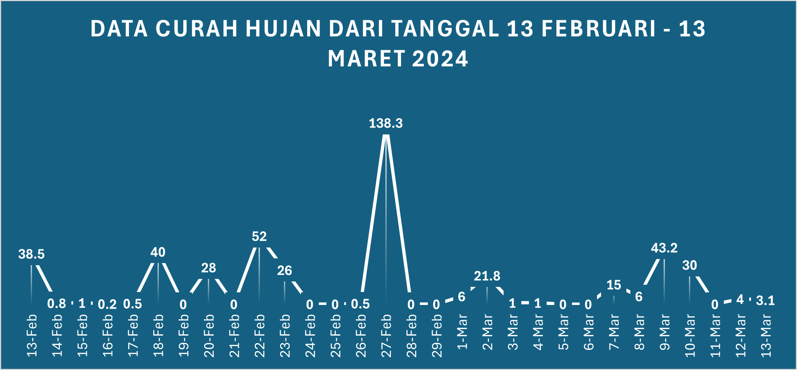

<body>
    <section class="breadcrumbs">
      <div class="container">
        <div class="d-flex justify-content-between align-items-center">
          <h2>Plot Presipitasi</h2>
          <p>Hasil Plot Data Curah Hujan di Bandar Udara Juanda</p>
        </div>
      </div>
    </section>
    <section id="portfolio-details" class="portfolio-details">
      <div class="container angin">
        <div class="col-lg-8">
          <div class="portfolio-details-slider swiper">
            <div class="swiper-wrapper align-items-center">
              <div class="swiper-slide">
                
              </div>
            </div>
          </div>
        </div>
      </div>
    </section>
  </body>
</html>
